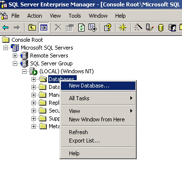
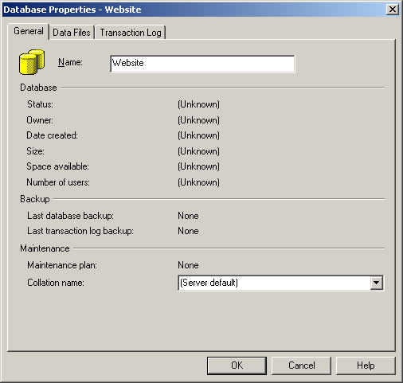
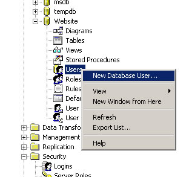

This section includes more detailed information on how to create and configure a SQL Server 2000 database for use with DotNetNuke.
1. In Enterprise Manager, Select Databases, right-click and select the New Database option.

2. In the Database Properties give the Database a name (in the example below the Databse is called Website), and click OK.

3. If you decide to use SQL Server Authorization then you will need to use a SQL Server Login. If you do not already have one created then you can create one by selecting Logins under Security, right click and select New Login.
4. Once you have created a Login you need to add that "Login" as a User for your new Database. To do this select the Database you just created, select the Users section, right click on Users and select the New Database User option.

5. Select the Login name from the combo box - this will automatically populate the User name field, make sure that the db_owner role is selected, and click OK

Your database is now ready to be installed.
Back to Welcome page.